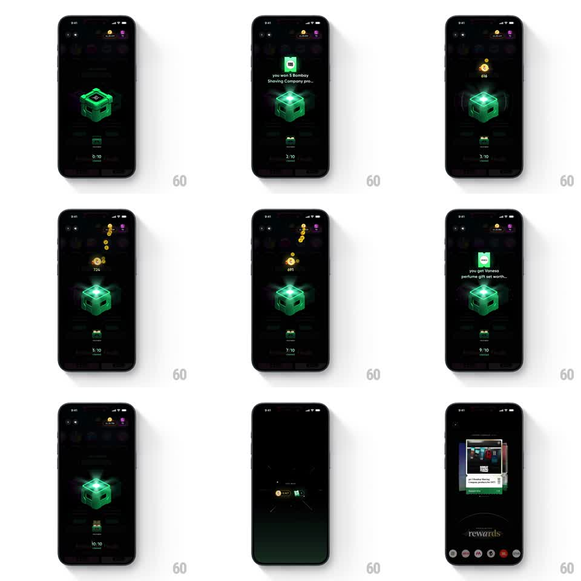

Media
Frame-by-frame

Rebuild this interaction 1:1: CRED's unclaimed-rewards cubes - tap the glowing green cube and it opens like a loot box: a prize card pops above it, the claimed counter ticks up, and gold coins burst out and fly to the coin balance.

Rebuild this interaction 1:1: CRED's unclaimed-rewards cubes - tap the glowing green cube and it opens like a loot box: a prize card pops above it, the claimed counter ticks up, and gold coins burst out and fly to the coin balance.
## Integration
Integration: stack-agnostic spec - springs given as stiffness/damping, timed motions as duration + curve; map every value to your framework and animation library of choice.
## Scene
CRED "UNCLAIMED REWARDS" dark screen: a row of 3D cubes (purple, green) under the header. Tapping the green glowing cube: a small prize banner appears above it ("you get 3 Vanesa perfumes worth Rs 897...", "you won 2 personal photo magnets...", "you get lifetime free RuPay Kotak credit card"), the cube glows brighter, an "N/10 claimed" counter sits below, and the coin balance lives top-right.
## Motion spec
Pattern: loot-cube reveal with coin-burst payoff.
- Tap: the cube compresses (scaleY 0.9, 100ms) then pops open - its lid flips (rotateX -70 degrees, 250ms) with a light burst from inside (radial glow flash, 200ms).
- The prize banner pops in above the cube (scale 0.7 -> 1, spring ~350/14) and holds for ~1.2s before fading.
- Gold coins burst from the cube (6-10 coins, arc trajectories with gravity, 500ms) and converge on the coin balance, which ticks up with each coin's arrival (digit roll, 100ms per increment).
- The claimed counter advances (3/10 -> 4/10, vertical roll, 200ms) as the cube's glow settles to a steady burn; consecutive taps repeat the cycle until 10/10, then the screen fades to dark (400ms).
## Calibration
- The cube is a rendered 3D object - specular, glowing edges; the glow intensifies on open and never fully dies afterward.
- Coins are small and fast; the balance tick is the payoff beat, not the coins themselves.
## Reduced motion
Cube flashes; prize banner fades in (200ms); balance ticks once, no coin flight.
## Don't miss
- Each prize banner's product thumbnail sits in a tiny green card above the cube - text and image arrive together.
- The counter roll and the balance roll are separate rhythms; don't sync them.